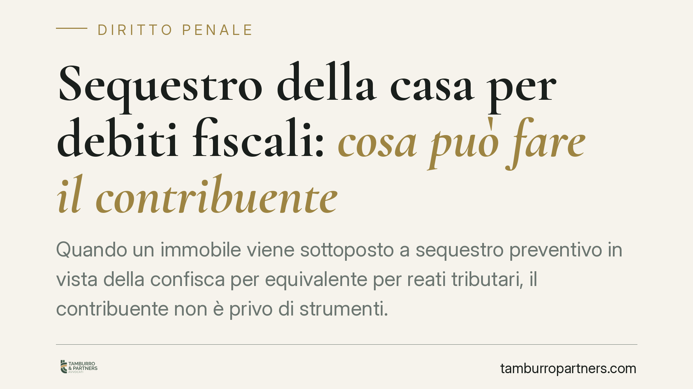

Sequestro della casa per debiti fiscali: cosa può fare il contribuente
Quando un immobile viene sottoposto a sequestro preventivo in vista della confisca per equivalente per reati tributari, il contribuente non è privo di strumenti. La giurisprudenza penale di legittimità valorizza il principio di proporzionalità, imponendo un ruolo attivo al destinatario. Vediamo cosa prevede la normativa e quali margini di manovra restano, soprattutto quando la casa è l'unico bene disponibile.

Il caso: sequestro dell'abitazione e confisca per equivalente
Nei reati tributari previsti dal D.lgs. 74/2000, il profitto dell'illecito è spesso un risparmio d'imposta, cioè un vantaggio economico non materialmente afferrabile. Per questo l'ordinamento ammette la confisca per equivalente: si aggrediscono beni del condannato per un valore pari al profitto, anche se quei beni non hanno alcun legame diretto con il reato.
La misura ha natura sanzionatoria, non meramente ripristinatoria. Proprio questa natura afflittiva impone che l'ablazione resti ancorata al principio di proporzionalità: non si può sottrarre più di quanto corrisponda all'importo da recuperare.
Inquadramento normativo
Il riferimento centrale è l'art. 12-bis del D.lgs. 74/2000, che disciplina la confisca (diretta e per equivalente) nei reati tributari, letto in combinato con l'art. 322-ter c.p., norma generale sulla confisca di valore. Il sequestro preventivo che la anticipa è lo strumento con cui, in fase cautelare, si vincolano i beni in attesa della decisione definitiva.
Un orientamento della giurisprudenza penale di legittimità — che richiede comunque verifica puntuale della singola pronuncia prima di ogni applicazione — ha affrontato il nodo del sequestro che cade su un immobile di valore superiore al profitto da confiscare. Secondo questa impostazione, la Corte richiama per analogia la logica dell'art. 495 c.p.c. (conversione del pignoramento), osservando che il destinatario della misura può chiedere di sostituire il bene con una somma di denaro o con beni alternativi di valore equivalente. È importante precisare che tale parallelismo è un'operazione interpretativa compiuta dalla stessa motivazione, non un dato normativo diretto: l'art. 495 c.p.c. opera nel processo civile di esecuzione.
Le implicazioni pratiche
Il punto qualificante riguarda l'onere di attivazione del condannato. Secondo questo indirizzo, chi subisce il sequestro non può limitarsi a lamentare la sproporzione: deve proporre concretamente i beni alternativi da sottoporre a vincolo o chiedere la conversione in denaro. In assenza di una proposta seria e documentata, il giudice non è tenuto a individuare d'ufficio soluzioni meno gravose.
Resta però fermo il limite quantitativo. Quando l'immobile è l'unico bene aggredibile e il suo valore eccede l'importo da confiscare, la quota di ricavato eccedente va restituita al condannato: non è ammessa un'ablazione che superi il profitto del reato. Si tratta della diretta applicazione del principio di proporzionalità alla natura sanzionatoria della misura.
### Un esempio numerico
Supponiamo un profitto illecito da confiscare pari a 80.000 euro e un immobile sequestrato del valore di 200.000 euro, unico bene del condannato. Se si procede alla vendita, lo Stato può trattenere solo 80.000 euro; i restanti 120.000 euro devono essere restituiti al contribuente. Il bene può essere venduto per intero, ma l'incameramento resta vincolato all'importo effettivamente dovuto.
Cosa fare in concreto
- Reagisci subito al provvedimento. Verifica termini e modalità per proporre riesame o appello cautelare: i tempi sono stretti e l'inerzia riduce le opzioni.
- Prepara una proposta di beni alternativi. Individua liquidità, strumenti finanziari o altri cespiti di valore equivalente al profitto, documentandone l'esistenza e la disponibilità.
- Valuta la conversione in denaro. Dove possibile, offrire una somma pari all'importo da confiscare può liberare l'immobile dal vincolo.
- Contesta la sproporzione con dati. Se il bene vale più del profitto, chiedi espressamente la limitazione del vincolo e, in caso di vendita, la restituzione dell'eccedenza.
- Fatti assistere in modo tempestivo. La strategia difensiva va costruita prima della fase esecutiva, quando i margini sono più ampi.
Consigliamo di non attendere l'esito del giudizio di merito per muoversi sul piano cautelare: la tutela dell'abitazione passa da iniziative documentate e tempestive, non da contestazioni generiche.
---
Contributo informativo a cura di Tamburro & Partners Avvocati - Avv. Giuseppe Tamburro. Non costituisce parere legale.
Ogni condominio ha una storia a sé.
Se gestisci un'amministrazione e vuoi un confronto su una specifica questione condominiale, scrivi allo studio. Ti rispondiamo entro un giorno lavorativo.